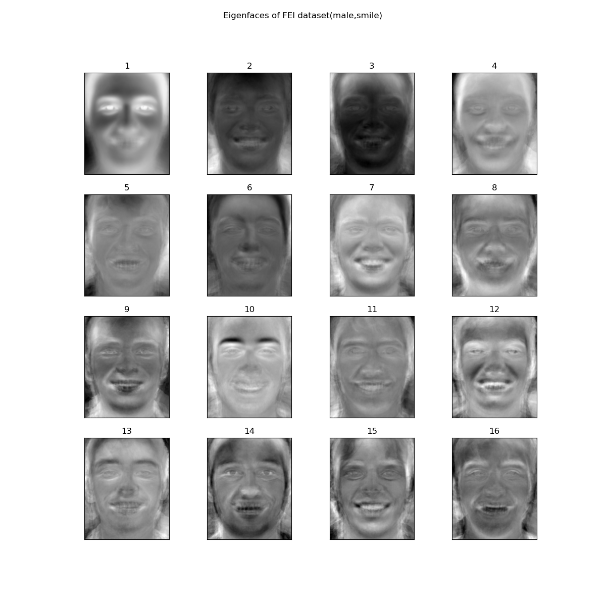

Let's think of an image as a set of patches with specific shapes and colors.
Morphing one image into another can then be considered as a combination of morphing of
structures and
cross-dissolving the colors.
To get started, we need to define the structures by annotating the key feature points in a
consistent way.
In this project, we base our work on the
FEI face database, a Brazilian face
database
constructed by the Artificial Intelligence Laboratory of FEI in São Bernardo do Campo, São
Paulo, Brazil.
The normalized and cropped dataset consists of 400 images of 200 individuals, with each photo
annotated with 46 key feature points.
We follow their annotation conventions and annotated our own images.
We denote the coefficient matrix as $P$. It can be shown that $P$ is guaranteed to have full
rank and therefore is invertible.
By applying affine transformation on every triangle in the mesh, we can effectively "warp" the
structure of one image into another.
The process looks like this:
As for the appearance, we can simply transition between two images by doing an affine
combination
of the two images.
$$
I_o = \beta I_{i1} + (1 - \beta) I_{i2}
$$
Note that this works best only if the two images already have the same structure, so this step
should take place after warping.
Results
To get the average face, we first find the average architecture of the two images and morph both
images to it.
Then, we simply cross-dissolve the colors of the two images.
"Mid-way face" between my classmate Sam and myself
"Mid-way face" between me and one of the images in the FEI
dataset
The Morph Sequence
Note that the "Mid-way face" is a special case of mixing two images.
By selecting the warping fraction and dissolve fraction to linearly transition between 0 and 1, we
can create a smooth sequence of one image into another.
Furthermore, if we string together the morphing process between multiple images, we can create a
cool morphing sequence.
Below are some examples.
The morphing sequence
The "Mean face" of a population
We can also take the average of an entire dataset and get the "mid-way face" of the entire
population.
Below is the average of the entire FEI dataset.
The average of the entire FEI dataset
We can also calculate the mean of a sub-population in the dataset, as shown in the table below.
Male
Male (Neutral)
Male (Smiling)
Female
Female (Neutral)
Female (Smiling)
With the same morphing algorithm, we can morph each image in the dataset into the population mean.
Here are some examples:
Morphing images in the dataset into the average face
This can of course also be done on a subpopulation.
Morphing images in the dataset into the average face
This is what it looks like to morph the average into my geometry.
Morphing population average into my geometry
Morphing my face into the population average geometry
Caricatures: Extrapolating from the mean
So far, we've been choosing the warping and dissolving fraction to be between $[0, 1]$.
If this is no longer the case, the we can extrapolate and go beyond the convex hull as defined by
the dataset.
Intuitively, this enhances the distinctive features of a given example compared to the mean.
Extrapolating from population mean. $\beta$ is the ratio of my
image.
Changing Gender and Facial Expression
It is possible to enhance specific features of an image by morphing with the corresponding
population average data.
For example,
We can compare the results of morphing just the shape, just the appearance, or both.
Shape
Shape + Appearance
Appearance
Among these choices, changing both the shape and appearance leads to the best results.
PCA Analysis and Extrapolating in the new basis
Another way to process the image data is to flatten the pixels into long vectors.
By stacking up the vectors into a matrix, we can use tools in linear algebra to analyze its
components.
One idea is to use Principal Component Analysis (PCA) to extract the most prominent features.
This is sometimes referred to as "eigen-faces".
Eigen-faces of the FEI dataset
Of course, we can do this for a sub-population again.
Below is the eigen-faces of smiling males in the FEI dataset.

Eigen-faces of smiling males in the FEI dataset
These eigen-faces also serve as a new set of basis.
We can find the representation of an image in this set of basis by taking the inner product between
the image and each of the eigen-face.
Also, we can attempt to "reconstruct" a face by taking a linear combination of the eigen-faces.
Below is the reconstructed face with the smiling male eigen-faces.
Note the reconstruction is very noisy because of out-of-distribution features.
My image reconstructed with the smiling male eigen-faces
Recall the singular decomposition of a matrix $A = U \Sigma V^T$, where $A \in \mathbb{R}^{N \times
R}$,
$N$ is the number of images in the dataset, and $R$ is the number of pixels in each image.
The eigen-faces are first $r$ vectors in the matrix $V$, where $r = \mathrm{rank}(A)$.
Since $r \leq \min (N, R)$, the number of eigen-faces cannot exceed the number of images in the
dataset.
The reconstruction works much better if we downscale the images first.
My image reconstructed with the eigen-faces of downscaled FEI
dataset. Images are downscaled to 25*30.
We can also attempt to do a caricature in the PCA basis.
Caricature created in the PCA basis.
The images are downscaled to 50*60, and the dataset consists of 400 images.
The average image is created by directly taking the mean of all images in the dataset.
The caricature is created with $I_o = 1.5 I_{i} - 0.5 I_{\mathrm{avg}}$.
Compared to the original image, the skin tone is shifted to the darker side, and the eyes are
rendered smaller, enhancing the features in the original image.
On the dataset, the performance is less desirable.
However, this approach could potentially do better if the dataset contained more images.